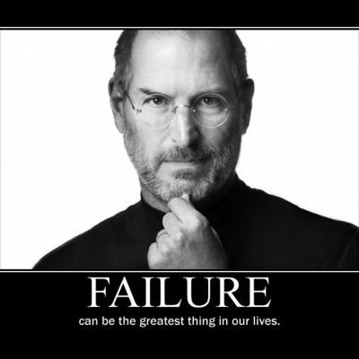

An Assignment on life: Values
We were given a list of values and asked to select the ones that remind us of the times in our lives when we’ve been the happiest, the proudest, or the most satisfied, Talk about a core value that is important to us and why, What was the last topic that someone asked for your advice on, and finally how do you feel when you think about your values? Do you think it can help you mediate stereotype threat if you recognize you feel it?
The value I chose to focus on is Music and I’m not even too sure that it’s an actual value but, it was in the list so I’m gonna run with it. Music has been a huge part of my life, ever since I’ve been able to I’ve been singing. It has helped me through good times and bad. It has pushed me more than anything I have ever done. People think that performing is just fun, but it takes a very strong work ethic, an exorbitant amount of work and self discipline, and you have to be okay with never making any money. So why put yourself through all this hardship you might ask? Because music teaches you everything; it teaches you how to read, feel, speak, stand out, blend in, reach for the stars, face your fears, and so much more. We all relate to music differently, one person could be “living their life” on the dance floor, while another is crying to the same song. Our connection to music is emotional, we store memories associated with certain songs and beats. When things aren’t going the way we’d like, we turn on [insert your choice of media player here] and all of our frustrations fade. Sometimes just humming releases all my stress from the day and reminds me that I am alive. It’s for these reasons that I hold Music so close to me.
I tend to think that I am a grounded person and am often asked for advice on an array of topics, the most recent being “girl problems”. A friend of mine was going out of town for a wedding and would be spending time with their ex. Since they are both close to the bride and groom, and had the fear that it would be awkward and uncomfortable. I told her that this trip is not only a celebration for the bride and groom, but also a chance for her to get out of the city and reconnect with herself; If you feel like you want to spend time with your ex and friends do it, if it becomes overwhelming take some time apart from them and go do something for yourself. You don’t need other people’s approval to be happy, just be who you are, and stay true to yourself, the people who are truly your friends will love you for that. She came back from her trip, hugged me, told me that she had a great time, and that the advice had worked.
Morals and values are what build what kind of person you portray yourself to be. The key is to become flexible with the view of yourself and others; keep in mind that not everybody thinks the same way or believes in the same principles, and that’s okay. If you go through life willing to learn and open to the world’s information, you will gain an extreme amount of knowledge that you can sift through to form your opinions. Just in case you wanted to see my list of values I am putting them here for you to see, they have been rated from 1-5 one being the lowest importance and 5 being the highest. Lastly, I found this great video about failure = success, if you have time check it out: How to Never FAIL at Anything Ever Again
Accomplishment (4), Achievement (4) Adventure (4), Affection (5), Ambition (4), Challenge (4), Close relationships (4), Commitment (5), Community (3), Compassion (4), Cooperation (4), Courage (5), Creativity (5), Enthusiasm (4), Excellence (4), Excitement (3), Fame (3), Faith (2), Freedom (3), Friendships (3), Growth (4), Helping other people (3), Honesty (5), Inner Harmony (3), Insight (3), Inspiration (4), Justice (5), Knowledge (3), Leadership (4), Music (5), Openness (3), Peace (4), Persistence (3), Romance (4), Self-knowledge (3), Self-reliance (4), Self-respect (5), Spirituality (4), Truth (5), Will-power (5), Wisdom (5)
Music Makes Me Loose Control
Greatness Comes From Failure